TNPSC இறுதி விடைக்குறிப்புடன் சரிபார்க்கப்பட்டது
TNPSC குரூப் 4 (12.07.2025) - பொதுத் தமிழ் வினா 51 முதல் 75 வரை, விடைகளுடன்
ஒவ்வொரு வினாவும் தேர்வு வினாத்தாளில் அச்சிடப்பட்டவாறே படமாகத் தரப்பட்டுள்ளது. விடை TNPSC இறுதி விடைக்குறிப்பின்படி; அக்குறிப்பின் பகுதியும் அருகிலேயே உள்ளது. விளக்கங்கள் சமச்சீர் பாடநூல்களுடன் சரிபார்க்கப்பட்டவை.
25வினாக்கள்
496பாடக் குறியீடு
2025தேர்வு நாள் 12.07.2025
பயிற்சி முறை: ஒரு விடையைத் தொட்டால் அது சரியா தவறா என்பதும் விளக்கமும் தெரியும்.
TNPSC இறுதி விடைக்குறிப்பு - தலைப்புப் பகுதி

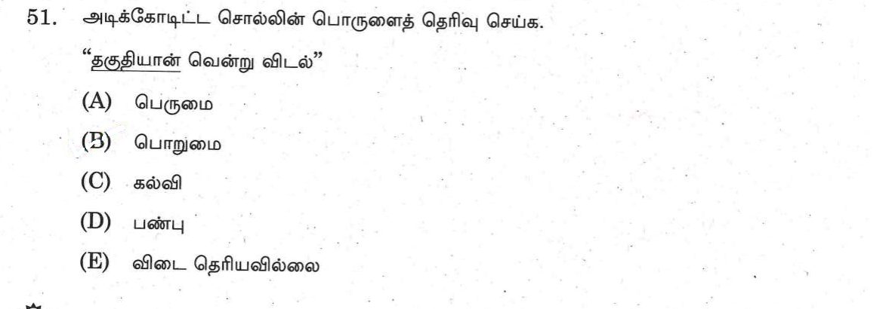
வினாத்தாள் படம் · தொட்டுப் பெரிதாக்கலாம்
அடிக்கோடிட்ட சொல்லின் பொருளைத் தெரிவு செய்க. “தகுதியான் வென்று விடல்”
- Aபெருமை
- Bபொறுமை
- Cகல்வி
- Dபண்பு
விடையும் விளக்கமும்
TNPSC இறுதி விடை(B) பொறுமை
TNPSC இறுதி விடைக்குறிப்பில் வினா 51
விளக்கம்
சரியான விடை (B): பொறுமை. இத்தொடர் பொறையுடைமை அதிகாரத்தில் உள்ள திருக்குறள் 158-இல் வருகிறது: 'மிகுதியான் மிக்கவை செய்தாரைத் தாம்தம் தகுதியான் வென்று விடல்'. செருக்கால் தீங்கு செய்தவரைத் தம் பொறுமையால் வெல்ல வேண்டும் என்பது இதன் பொருள். இங்கு 'தகுதி' என்பது பொறுமையைக் குறிக்கிறது.
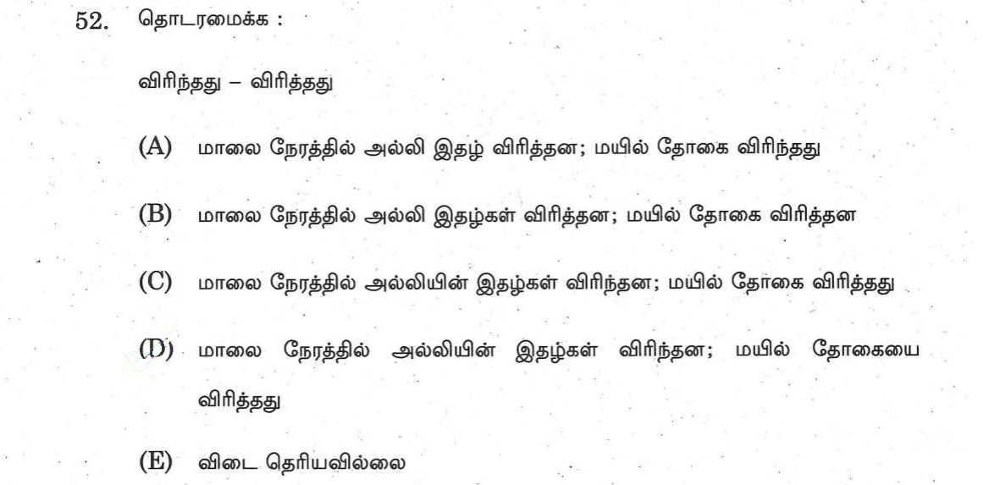
வினாத்தாள் படம் · தொட்டுப் பெரிதாக்கலாம்
தொடரமைக்க : விரிந்தது - விரித்தது
- Aமாலை நேரத்தில் அல்லி இதழ் விரித்தன; மயில் தோகை விரிந்தது
- Bமாலை நேரத்தில் அல்லி இதழ்கள் விரித்தன; மயில் தோகை விரித்தன
- Cமாலை நேரத்தில் அல்லியின் இதழ்கள் விரிந்தன; மயில் தோகை விரித்தது
- Dமாலை நேரத்தில் அல்லியின் இதழ்கள் விரிந்தன; மயில் தோகையை விரித்தது
விடையும் விளக்கமும்
TNPSC இறுதி விடை(D) மாலை நேரத்தில் அல்லியின் இதழ்கள் விரிந்தன; மயில் தோகையை விரித்தது
TNPSC இறுதி விடைக்குறிப்பில் வினா 52
விளக்கம்
சரியான விடை (D): மாலை நேரத்தில் அல்லியின் இதழ்கள் விரிந்தன; மயில் தோகையை விரித்தது. இதில் 'இதழ்கள்' என்ற பன்மை எழுவாய்க்கு 'விரிந்தன' என்ற பன்மைப் பயனிலையும், மயில் தன் தோகையை விரித்த செயலைக் குறிக்க 'விரித்தது' என்ற பிறவினைச் சொல்லும் சரியாகப் பயன்படுத்தப்பட்டுள்ளன.
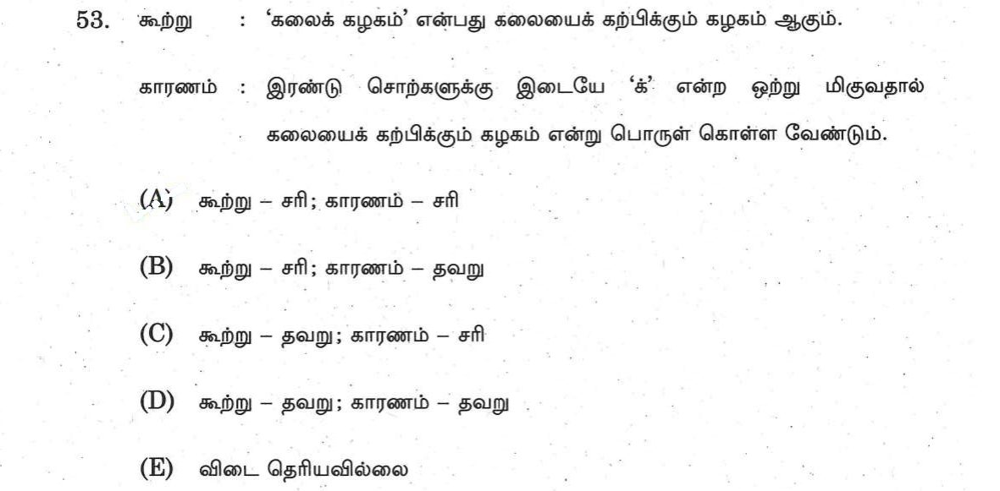
வினாத்தாள் படம் · தொட்டுப் பெரிதாக்கலாம்
கூற்று : ‘கலைக் கழகம்’ என்பது கலையைக் கற்பிக்கும் கழகம் ஆகும். காரணம் : இரண்டு சொற்களுக்கு இடையே ‘க்’ என்ற ஒற்று மிகுவதால் கலையைக் கற்பிக்கும் கழகம் என்று பொருள் கொள்ள வேண்டும்.
- Aகூற்று - சரி; காரணம் - சரி
- Bகூற்று - சரி; காரணம் - தவறு
- Cகூற்று - தவறு; காரணம் - சரி
- Dகூற்று - தவறு; காரணம் - தவறு
விடையும் விளக்கமும்
TNPSC இறுதி விடை(A) கூற்று - சரி; காரணம் - சரி
TNPSC இறுதி விடைக்குறிப்பில் வினா 53
விளக்கம்
சரியான விடை (A): கூற்று - சரி; காரணம் - சரி. 'கலைக்கழகம்' என்பது கலையைக் கற்பிக்கும் கழகம் எனப் பொருள்படும்; எனவே கூற்று சரி. இது இரண்டாம் வேற்றுமை உருபும் பயனும் உடன்தொக்க தொகை: 'ஐ' என்ற உருபும் 'கற்பிக்கும்' என்ற பயனைக் காட்டும் சொல்லும் மறைந்து வருகின்றன. இத்தொகையில் வல்லினம் மிகும்: கலை + கழகம் = கலைக்கழகம். மிகுந்து வரும் 'க்' என்ற ஒற்றே இப்பொருளை உணர்த்துவதால் காரணமும் சரி.
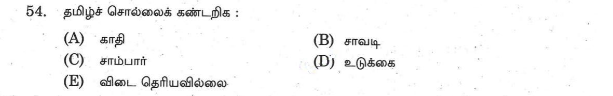
வினாத்தாள் படம் · தொட்டுப் பெரிதாக்கலாம்
தமிழ்ச்சொல்லைக் கண்டறிக :
- Aகாதி
- Bசாவடி
- Cசாம்பார்
- Dஉடுக்கை
விடையும் விளக்கமும்
TNPSC இறுதி விடை(D) உடுக்கை
TNPSC இறுதி விடைக்குறிப்பில் வினா 54
விளக்கம்
சரியான விடை (D): உடுக்கை. சமச்சீர் 8ஆம் வகுப்புத் தமிழ்: உடுக்கை என்பது இடை சுருங்கிய ஒரு கைப்பறை (தமிழர் இசைக்கருவி). காதி, சாவடி, சாம்பார் ஆகியவை பிறமொழிகளிலிருந்து தமிழில் வந்து வழங்கும் சொற்கள்.
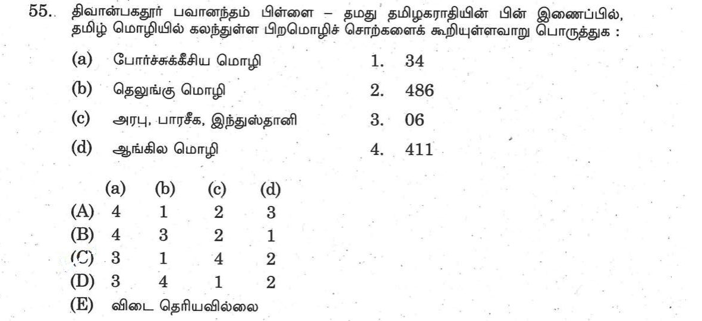
வினாத்தாள் படம் · தொட்டுப் பெரிதாக்கலாம்
திவான்பகதூர் பவானந்தம் பிள்ளை - தமது தமிழகராதியின் பின் இணைப்பில், தமிழ் மொழியில் கலந்துள்ள பிறமொழிச் சொற்களைக் கூறியுள்ளவாறு பொருத்துக :
பட்டியல் I
a) போர்ச்சுக்கீசிய மொழி
b) தெலுங்கு மொழி
c) அரபு, பாரசீக, இந்துஸ்தானி
d) ஆங்கில மொழி
பட்டியல் II
1. 34
2. 486
3. 06
4. 411
- A4, 1, 2, 3
- B4, 3, 2, 1
- C3, 1, 4, 2
- D3, 4, 1, 2
விடையும் விளக்கமும்
TNPSC இறுதி விடை(C) 3, 1, 4, 2
TNPSC இறுதி விடைக்குறிப்பில் வினா 55
விளக்கம்
சரியான விடை (C): 3, 1, 4, 2. வினாத்தாளில் அச்சிடப்பட்ட பட்டியல் II-இன்படி பவானந்தம் பிள்ளை தரும் பிறமொழிச் சொற்களின் எண்ணிக்கை: போர்ச்சுக்கீசியம் 06, தெலுங்கு 34, அரபு, பாரசீக, இந்துஸ்தானி 411, ஆங்கிலம் 486 (TNPSC இறுதி விடைக்குறிப்பு, வினா 55).
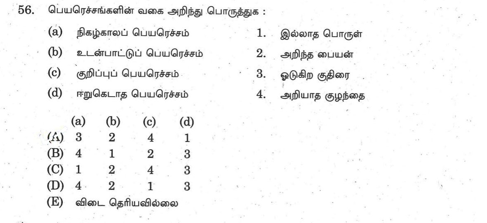
வினாத்தாள் படம் · தொட்டுப் பெரிதாக்கலாம்
பெயரெச்சங்களின் வகை அறிந்து பொருத்துக :
பட்டியல் I
a) நிகழ்காலப் பெயரெச்சம்
b) உடன்பாட்டுப் பெயரெச்சம்
c) குறிப்புப் பெயரெச்சம்
d) ஈறுகெடாத பெயரெச்சம்
பட்டியல் II
1. இல்லாத பொருள்
2. அறிந்த பையன்
3. ஓடுகிற குதிரை
4. அறியாத குழந்தை
- A3, 2, 4, 1
- B4, 1, 2, 3
- C1, 2, 4, 3
- D4, 2, 1, 3
விடையும் விளக்கமும்
TNPSC இறுதி விடைநான்கு விடைகளும் ஏற்கப்பட்டன (ALL)
TNPSC இறுதி விடைக்குறிப்பில் வினா 56
விளக்கம்
இந்த வினாவுக்கு TNPSC இறுதி விடைக்குறிப்பு நான்கு விடைகளையும் ஏற்றுக்கொள்கிறது. எந்த விடையும் சரியான வரிசையைத் தரவில்லை; எனவே எல்லா விடைகளுக்கும் மதிப்பெண் வழங்கப்பட்டது. ஓடுகிற குதிரை - நிகழ்காலப் பெயரெச்சம் (a-3); அறிந்த பையன் - உடன்பாட்டுப் பெயரெச்சம் (b-2); இல்லாத பொருள் - குறிப்புப் பெயரெச்சம் (c-1); அறியாத குழந்தை - ஈறுகெடாத எதிர்மறைப் பெயரெச்சம் (d-4). சரியான வரிசை 3, 2, 1, 4 எந்த விடையிலும் இல்லை; A 3, 2, 4, 1 என்று தருகிறது.
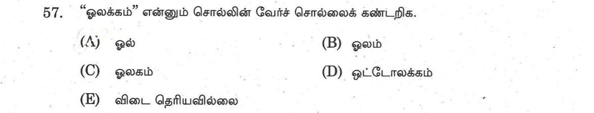
வினாத்தாள் படம் · தொட்டுப் பெரிதாக்கலாம்
“ஓலக்கம்” என்னும் சொல்லின் வேர்ச் சொல்லைக் கண்டறிக.
- Aஓல்
- Bஓலம்
- Cஓலகம்
- Dஒட்டோலக்கம்
விடையும் விளக்கமும்
TNPSC இறுதி விடைக்குறிப்பில் வினா 57
விளக்கம்
சரியான விடை (A) ஓல். வினாத்தாளில் «ஓலக்கம்» (நெடில் ஓ) என்று அச்சிடப்பட்டுள்ளது. ஓலக்கம் - அரசவை, கொலுமண்டபம், பலர் கூடியிருக்கும் அவை. ஓலம், ஓலகம் ஆகியவை முழுச் சொற்கள்; ஒட்டோலக்கம் என்பது ஓலக்கம் சேர்ந்த பெரிய சொல். சொல்லின் மிகச் சிறிய அடிப்படைப் பகுதி «ஓல்» - அதுவே வேர்ச்சொல். TNPSC இறுதி விடைக்குறிப்பு: A (வினா 57).
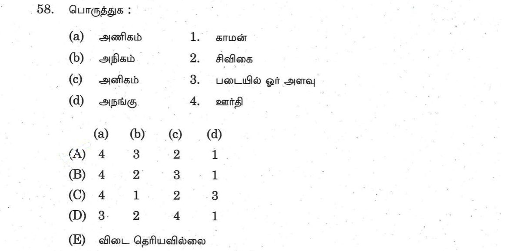
வினாத்தாள் படம் · தொட்டுப் பெரிதாக்கலாம்
பொருத்துக :
பட்டியல் I
a) அணிகம்
b) அநிகம்
c) அனிகம்
d) அநங்கு
பட்டியல் II
1. காமன்
2. சிவிகை
3. படையில் ஓர் அளவு
4. ஊர்தி
- A4, 3, 2, 1
- B4, 2, 3, 1
- C4, 1, 2, 3
- D3, 2, 4, 1
விடையும் விளக்கமும்
TNPSC இறுதி விடை(A) 4, 3, 2, 1
TNPSC இறுதி விடைக்குறிப்பில் வினா 58
விளக்கம்
சரியான விடை (A): 4, 3, 2, 1. ஒலியில் ஒத்த இச்சொற்களின் எழுத்து வேறுபாட்டையும் பொருளையும் கவனிக்க வேண்டும். (a) அணிகம் (ண) - ஊர்தி (4). (b) அநிகம் (ந) - படையில் ஓர் அளவு (3). (c) அனிகம் (ன) - சிவிகை, அதாவது பல்லக்கு (2). (d) அநங்கு - காமன் (1); சிவனால் எரிக்கப்பட்டு உடலற்றவன் ஆனதால் மன்மதன் அநங்கன் என்றும் அழைக்கப்படுகிறான்.
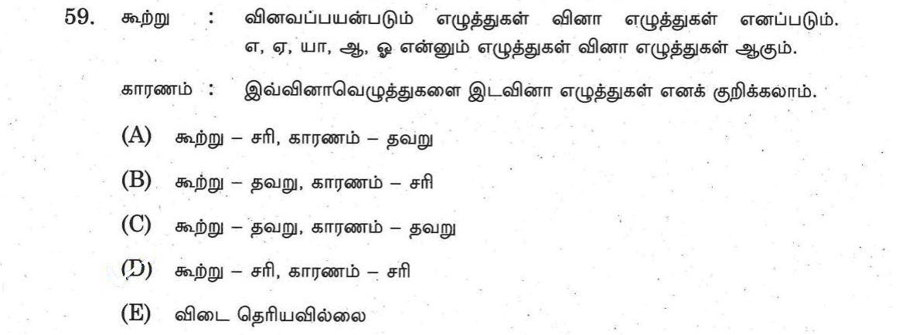
வினாத்தாள் படம் · தொட்டுப் பெரிதாக்கலாம்
கூற்று : வினவப்பயன்படும் எழுத்துகள் வினா எழுத்துகள் எனப்படும். எ, ஏ, யா, ஆ, ஓ என்னும் எழுத்துகள் வினா எழுத்துகள் ஆகும். காரணம் : இவ்வினாவெழுத்துகளை இடவினா எழுத்துகள் எனக் குறிக்கலாம்.
- Aகூற்று - சரி, காரணம் - தவறு
- Bகூற்று - தவறு, காரணம் - சரி
- Cகூற்று - தவறு, காரணம் - தவறு
- Dகூற்று - சரி, காரணம் - சரி
விடையும் விளக்கமும்
TNPSC இறுதி விடை(D) கூற்று - சரி, காரணம் - சரி
TNPSC இறுதி விடைக்குறிப்பில் வினா 59
விளக்கம்
சரியான விடை (D): கூற்று - சரி, காரணம் - சரி. பாடநூல் (ஆறாம் வகுப்பு): எ, யா, ஆ, ஓ, ஏ ஆகிய ஐந்தும் வினா எழுத்துகள்; சில வினா எழுத்துகள் சொல்லின் முதலிலும் சில இறுதியிலும் இடம்பெறும். «இடவினா» என்ற பெயர் பாடநூலில் இல்லை; பாடநூல் அகவினா (எது, யார்), புறவினா என்று பிரிக்கிறது. TNPSC இறுதி விடைக்குறிப்பு D: இரண்டும் சரி.
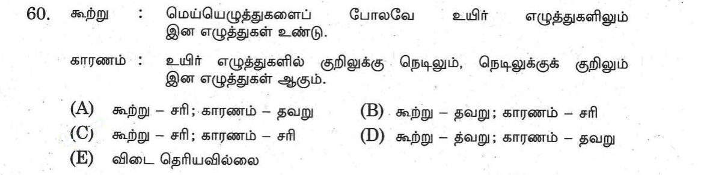
வினாத்தாள் படம் · தொட்டுப் பெரிதாக்கலாம்
கூற்று : மெய்யெழுத்துகளைப் போலவே உயிர் எழுத்துகளிலும் இன எழுத்துகள் உண்டு. காரணம் : உயிர் எழுத்துகளில் குறிலுக்கு நெடிலும், நெடிலுக்குக் குறிலும் இன எழுத்துகள் ஆகும்.
- Aகூற்று - சரி; காரணம் - தவறு
- Bகூற்று - தவறு; காரணம் - சரி
- Cகூற்று - சரி; காரணம் - சரி
- Dகூற்று - தவறு; காரணம் - தவறு
விடையும் விளக்கமும்
TNPSC இறுதி விடை(C) கூற்று - சரி; காரணம் - சரி
TNPSC இறுதி விடைக்குறிப்பில் வினா 60
விளக்கம்
சரியான விடை (C): கூற்று - சரி; காரணம் - சரி. தமிழ் இலக்கணத்தில் ஒலிக்கும் முயற்சி மற்றும் பிறக்கும் இடத்தின் அடிப்படையில் எழுத்துகள் இனம் பிரிக்கப்படுகின்றன. உயிர் எழுத்துகளில் அ-ஆ, இ-ஈ போன்ற குறில்-நெடில் இணைகள் இன எழுத்துகளாகும்.
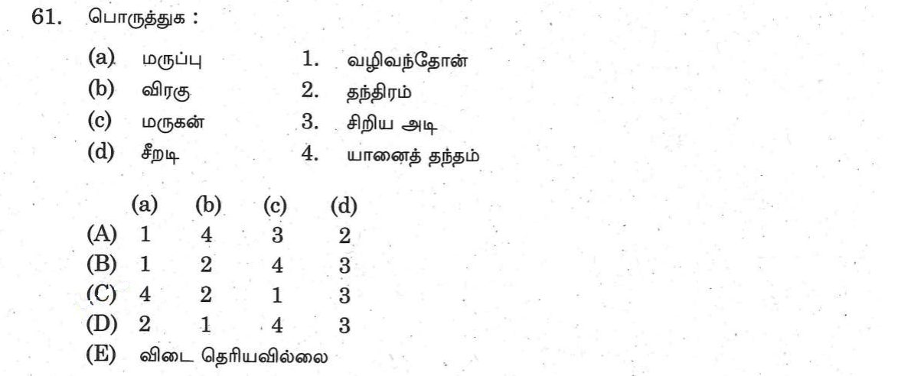
வினாத்தாள் படம் · தொட்டுப் பெரிதாக்கலாம்
பொருத்துக:
பட்டியல் I
a) மருப்பு
b) விரகு
c) மருகன்
d) சீறடி
பட்டியல் II
1. வழிவந்தோன்
2. தந்திரம்
3. சிறிய அடி
4. யானைத் தந்தம்
- A1, 4, 3, 2
- B1, 2, 4, 3
- C4, 2, 1, 3
- D2, 1, 4, 3
விடையும் விளக்கமும்
TNPSC இறுதி விடை(C) 4, 2, 1, 3
TNPSC இறுதி விடைக்குறிப்பில் வினா 61
விளக்கம்
சரியான விடை (C): 4, 2, 1, 3. (a) மருப்பு - யானைத் தந்தம் (4), (b) விரகு - தந்திரம் (2), (c) மருகன் - வழிவந்தோன் (1), (d) சீறடி - சிறிய அடி (3).
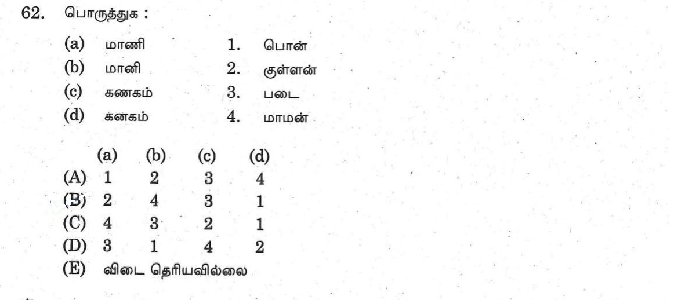
வினாத்தாள் படம் · தொட்டுப் பெரிதாக்கலாம்
பொருத்துக :
பட்டியல் I
a) மாணி
b) மானி
c) கணகம்
d) கனகம்
பட்டியல் II
1. பொன்
2. குள்ளன்
3. படை
4. மாமன்
- A1, 2, 3, 4
- B2, 4, 3, 1
- C4, 3, 2, 1
- D3, 1, 4, 2
விடையும் விளக்கமும்
TNPSC இறுதி விடை(B) 2, 4, 3, 1
TNPSC இறுதி விடைக்குறிப்பில் வினா 62
விளக்கம்
சரியான விடை (B): 2, 4, 3, 1. (a) மாணி - குள்ளன் (2), (b) மானி - மாமன் (4), (c) கணகம் - படை (3), (d) கனகம் - பொன் (1).
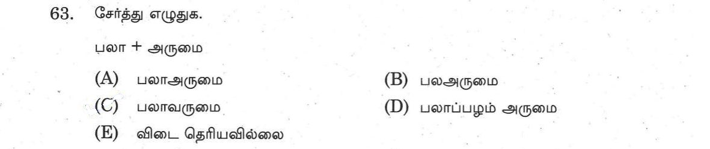
வினாத்தாள் படம் · தொட்டுப் பெரிதாக்கலாம்
சேர்த்து எழுதுக. பலா + அருமை
- Aபலாஅருமை
- Bபலஅருமை
- Cபலாவருமை
- Dபலாப்பழம் அருமை
விடையும் விளக்கமும்
TNPSC இறுதி விடை(C) பலாவருமை
TNPSC இறுதி விடைக்குறிப்பில் வினா 63
விளக்கம்
சரியான விடை (C): பலாவருமை. புணர்ச்சி விதியின்படி, நிலைமொழியின் இறுதியில் 'ஆ' என்னும் உயிர் எழுத்து இருந்து, வருமொழியின் முதலில் உயிர் எழுத்து வந்தால் 'வ்' என்னும் உடம்படுமெய் தோன்றும். எனவே பலா + அருமை = பலாவருமை.
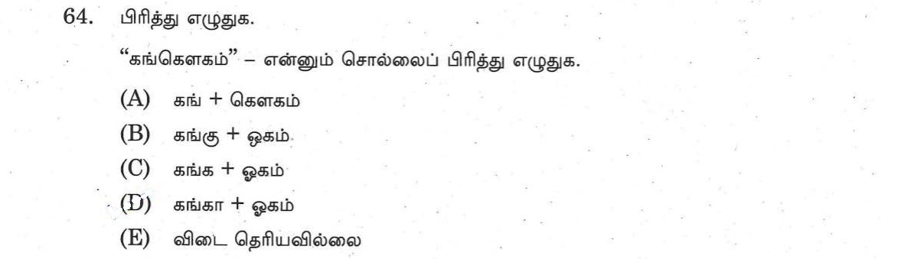
வினாத்தாள் படம் · தொட்டுப் பெரிதாக்கலாம்
பிரித்து எழுதுக. “கங்கௌகம்” - என்னும் சொல்லைப் பிரித்து எழுதுக.
- Aகங் + கௌகம்
- Bகங்கு + ஒகம்
- Cகங்க + ஓகம்
- Dகங்கா + ஓகம்
விடையும் விளக்கமும்
TNPSC இறுதி விடை(D) கங்கா + ஓகம்
TNPSC இறுதி விடைக்குறிப்பில் வினா 64
விளக்கம்
சரியான விடை (D): கங்கா + ஓகம். கங்கா (கங்கை) + ஓகம் (வெள்ளம், பெருக்கு) = கங்கௌகம் (கங்கையின் பெருக்கு). இது வடமொழிப் புணர்ச்சியில் விருத்தி சந்தி: நிலைமொழி இறுதியில் அ/ஆ நிற்க, வருமொழி முதலில் ஓ/ஔ வந்தால் இரண்டும் இணைந்து ஔ ஆகும். அதன்படி கங்கா என்பதன் இறுதி 'ஆ'வும் ஓகம் என்பதன் முதல் 'ஓ'வும் சேர்ந்து 'ஔ' ஆகி, கங்கௌகம் எனப் புணர்ந்தது. வினாத்தாளில் (B) «கங்கு + ஒகம்» (குறில் ஒ) என்று அச்சிடப்பட்டுள்ளது. TNPSC இறுதி விடைக்குறிப்பு: D (வினா 64).
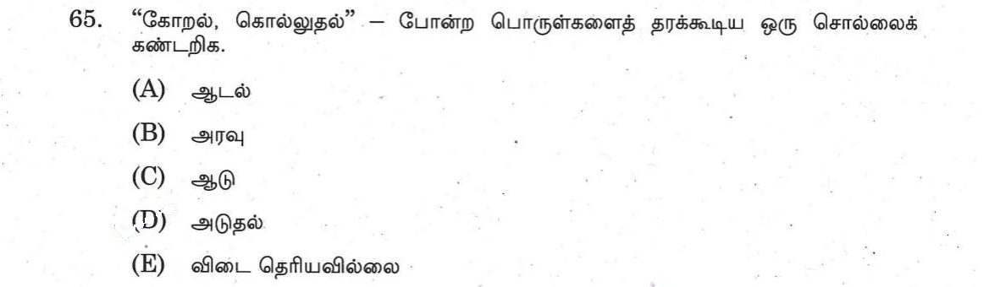
வினாத்தாள் படம் · தொட்டுப் பெரிதாக்கலாம்
“கோறல், கொல்லுதல்” - போன்ற பொருள்களைத் தரக்கூடிய ஒரு சொல்லைக் கண்டறிக.
- Aஆடல்
- Bஅரவு
- Cஆடு
- Dஅடுதல்
விடையும் விளக்கமும்
TNPSC இறுதி விடை(D) அடுதல்
TNPSC இறுதி விடைக்குறிப்பில் வினா 65
விளக்கம்
சரியான விடை (D): அடுதல். செவ்வியல் தமிழில், 'அடுதல்' என்ற தொழிற் பெயர் கொல்லுதல், அழித்தல் அல்லது சமைத்தல் என்ற பொருள்களைத் தரும், இது 'கோறல்' மற்றும் 'கொல்லுதல்' ஆகியவற்றுடன் பொருந்துகிறது.
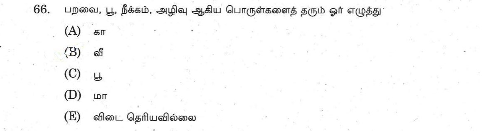
வினாத்தாள் படம் · தொட்டுப் பெரிதாக்கலாம்
பறவை, பூ, நீக்கம், அழிவு ஆகிய பொருள்களைத் தரும் ஓர் எழுத்து
- Aகா
- Bவீ
- Cபூ
- Dமா
விடையும் விளக்கமும்
TNPSC இறுதி விடைக்குறிப்பில் வினா 66
விளக்கம்
சரியான விடை (B): வீ. ஓரெழுத்து ஒருமொழியாகிய 'வீ' என்பதற்குப் பறவை, பூ, நீக்கம், அழிவு ஆகிய பொருள்கள் உண்டு.
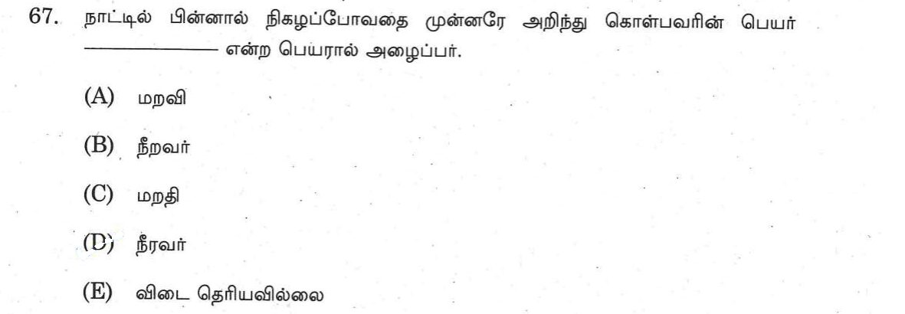
வினாத்தாள் படம் · தொட்டுப் பெரிதாக்கலாம்
நாட்டில் பின்னால் நிகழப்போவதை முன்னரே அறிந்து கொள்பவரின் பெயர் ______ என்ற பெயரால் அழைப்பர்.
- Aமறவி
- Bநீறவர்
- Cமறதி
- Dநீரவர்
விடையும் விளக்கமும்
TNPSC இறுதி விடை(D) நீரவர்
TNPSC இறுதி விடைக்குறிப்பில் வினா 67
விளக்கம்
சரியான விடை (D): நீரவர். 'நீரவர்' என்பதற்கு அறிவுடையார் என்று பொருள் (திருக்குறள் 782: 'நிறைநீர நீரவர் கேண்மை...'). 'அறிவுடையார் ஆவது அறிவார்' (குறள் 427) என்று, அறிவுடையோர் இனி நிகழப்போவதை முன்னரே அறிவர் என வள்ளுவர் கூறுகிறார். எனவே பின்னால் நிகழ்வதை முன்னறிபவர் நீரவர் எனப்படுவர். மறவி - மறதியுடையவர்; மறதி - மறத்தல்; நீறவர் - பிழையான வடிவம் (நீறு - சாம்பல்).
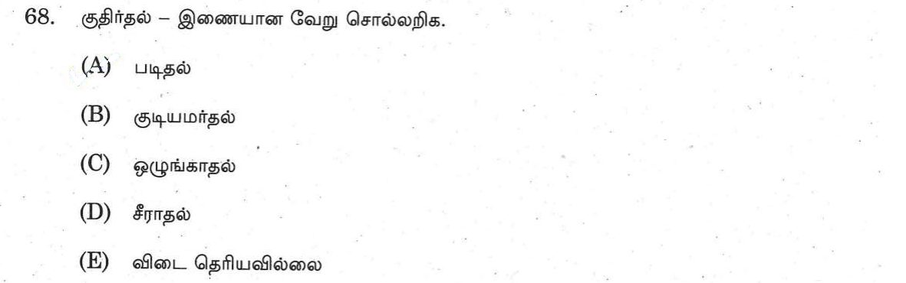
வினாத்தாள் படம் · தொட்டுப் பெரிதாக்கலாம்
குதிர்தல் - இணையான வேறு சொல்லறிக.
- Aபடிதல்
- Bகுடியமர்தல்
- Cஒழுங்காதல்
- Dசீராதல்
விடையும் விளக்கமும்
TNPSC இறுதி விடை(A) படிதல் / (B) குடியமர்தல் / (C) ஒழுங்காதல் - இவை அனைத்தும் ஏற்கப்பட்டன
TNPSC இறுதி விடைக்குறிப்பில் வினா 68
விளக்கம்
இந்த வினாவுக்கு TNPSC இறுதி விடைக்குறிப்பு A, B, C விடைகளை ஏற்றுக்கொள்கிறது. குதிர்தல் என்பதற்குப் பல பொருள்கள் உண்டு: பாவாணர் தமிழ்க் களஞ்சியம் (தொகுதி 18, பக். 57) படிதல் (A), குடியமர்தல் (B), ஒழுங்காதல் (C) என்ற மூன்று பொருள்களையும் தருகிறது. எனவே மூன்றும் ஏற்கப்பட்டன; சீராதல் (D) அவற்றுள் இல்லை.
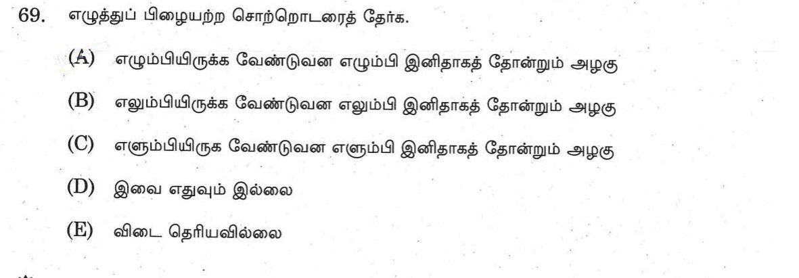
வினாத்தாள் படம் · தொட்டுப் பெரிதாக்கலாம்
எழுத்துப் பிழையற்ற சொற்றொடரைத் தேர்க.
- Aஎழும்பியிருக்க வேண்டுவன எழும்பி இனிதாகத் தோன்றும் அழகு
- Bஎலும்பியிருக்க வேண்டுவன எலும்பி இனிதாகத் தோன்றும் அழகு
- Cஎளும்பியிருக வேண்டுவன எளும்பி இனிதாகத் தோன்றும் அழகு
- Dஇவை எதுவும் இல்லை
விடையும் விளக்கமும்
TNPSC இறுதி விடை(A) எழும்பியிருக்க வேண்டுவன எழும்பி இனிதாகத் தோன்றும் அழகு
TNPSC இறுதி விடைக்குறிப்பில் வினா 69
விளக்கம்
சரியான விடை (A): எழும்பியிருக்க வேண்டுவன எழும்பி இனிதாகத் தோன்றும் அழகு. 'எழும்பி' (மேலெழுந்து) என்ற சொல்லிற்குச் சிறப்பு 'ழ'கரத்தைப் பயன்படுத்துவதே சரியானது.
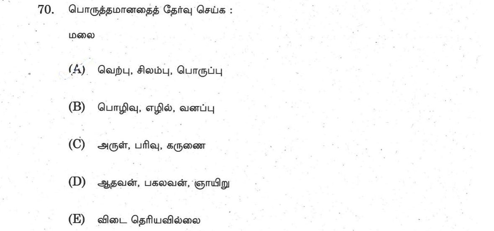
வினாத்தாள் படம் · தொட்டுப் பெரிதாக்கலாம்
பொருத்தமானதைத் தேர்வு செய்க : மலை
- Aவெற்பு, சிலம்பு, பொருப்பு
- Bபொழிவு, எழில், வனப்பு
- Cஅருள், பரிவு, கருணை
- Dஆதவன், பகலவன், ஞாயிறு
விடையும் விளக்கமும்
TNPSC இறுதி விடை(A) வெற்பு, சிலம்பு, பொருப்பு
TNPSC இறுதி விடைக்குறிப்பில் வினா 70
விளக்கம்
சரியான விடை (A): வெற்பு, சிலம்பு, பொருப்பு. இவை அனைத்தும் 'மலை' என்ற சொல்லுக்குரிய இலக்கியச் சொற்களாகும். குறிப்பாகக் குறிஞ்சி நிலப் பாடல்களில் இவை அதிகம் பயின்று வருகின்றன.
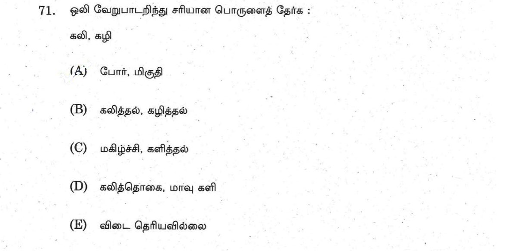
வினாத்தாள் படம் · தொட்டுப் பெரிதாக்கலாம்
ஒலி வேறுபாடறிந்து சரியான பொருளைத் தேர்க : கலி, கழி
- Aபோர், மிகுதி
- Bகலித்தல், கழித்தல்
- Cமகிழ்ச்சி, களித்தல்
- Dகலித்தொகை, மாவு களி
விடையும் விளக்கமும்
TNPSC இறுதி விடை(A) போர், மிகுதி
TNPSC இறுதி விடைக்குறிப்பில் வினா 71
விளக்கம்
சரியான விடை (A): போர், மிகுதி. 'கலி' என்ற சொல்லுக்குப் போர் அல்லது துன்பம் என்று பொருள். 'கழி' என்ற சொல்லுக்கு மிகுதி அல்லது நீக்குதல் என்று பொருள். இவ்விரு சொற்களும் ஒலியில் நெருக்கமாக இருந்தாலும் பொருளில் வேறுபடுகின்றன.
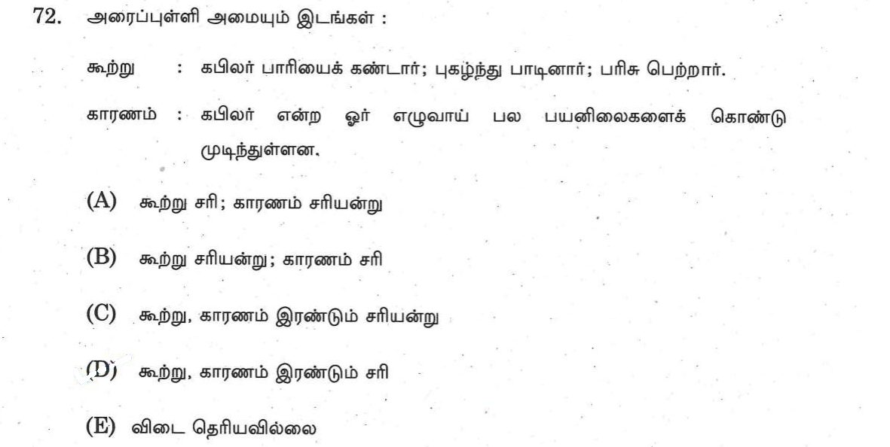
வினாத்தாள் படம் · தொட்டுப் பெரிதாக்கலாம்
அரைப்புள்ளி அமையும் இடங்கள் : கூற்று : கபிலர் பாரியைக் கண்டார்; புகழ்ந்து பாடினார்; பரிசு பெற்றார். காரணம் : கபிலர் என்ற ஓர் எழுவாய் பல பயனிலைகளைக் கொண்டு முடிந்துள்ளன.
- Aகூற்று சரி; காரணம் சரியன்று
- Bகூற்று சரியன்று; காரணம் சரி
- Cகூற்று, காரணம் இரண்டும் சரியன்று
- Dகூற்று, காரணம் இரண்டும் சரி
விடையும் விளக்கமும்
TNPSC இறுதி விடை(D) கூற்று, காரணம் இரண்டும் சரி
TNPSC இறுதி விடைக்குறிப்பில் வினா 72
விளக்கம்
சரியான விடை (D): கூற்று, காரணம் இரண்டும் சரி. சமச்சீர் 8ஆம் வகுப்புத் தமிழ்: «ஒரே எழுவாயில் பல வாக்கியங்கள் தொடரும் இடத்தில் அரைப்புள்ளி வரும்» (எ.கா. கரிகாலன் கங்கை வரை படையெடுத்துச் சென்றான்; கனக விசயருடன் போரிட்டான்). இங்கு 'கபிலர்' என்ற ஓர் எழுவாய் கண்டார், பாடினார், பெற்றார் என்ற பல பயனிலைகளைக் கொண்டு முடிவதால் அரைப்புள்ளி சரி.
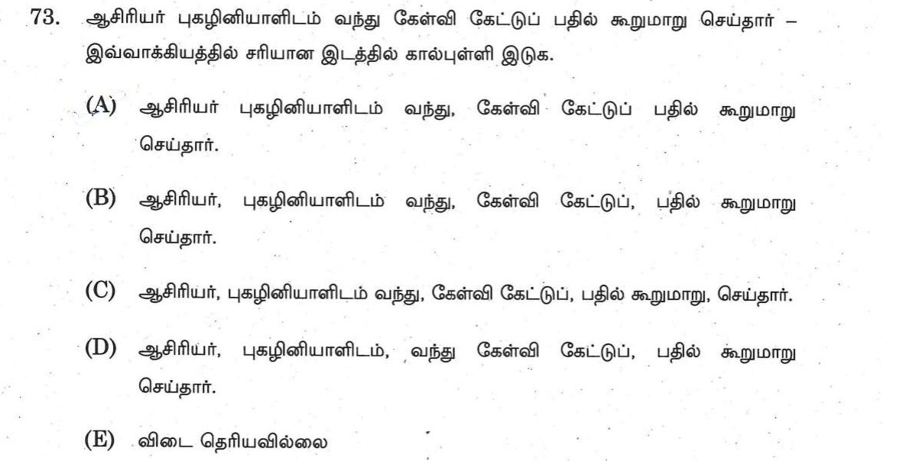
வினாத்தாள் படம் · தொட்டுப் பெரிதாக்கலாம்
ஆசிரியர் புகழினியாளிடம் வந்து கேள்வி கேட்டுப் பதில் கூறுமாறு செய்தார் – இவ்வாக்கியத்தில் சரியான இடத்தில் கால்புள்ளி இடுக.
- Aஆசிரியர் புகழினியாளிடம் வந்து, கேள்வி கேட்டுப் பதில் கூறுமாறு செய்தார்.
- Bஆசிரியர், புகழினியாளிடம் வந்து, கேள்வி கேட்டுப், பதில் கூறுமாறு செய்தார்.
- Cஆசிரியர், புகழினியாளிடம் வந்து, கேள்வி கேட்டுப், பதில் கூறுமாறு, செய்தார்.
- Dஆசிரியர், புகழினியாளிடம், வந்து கேள்வி கேட்டுப், பதில் கூறுமாறு செய்தார்.
விடையும் விளக்கமும்
TNPSC இறுதி விடை(A) ஆசிரியர் புகழினியாளிடம் வந்து, கேள்வி கேட்டுப் பதில் கூறுமாறு செய்தார்.
TNPSC இறுதி விடைக்குறிப்பில் வினா 73
விளக்கம்
சரியான விடை (A): ஆசிரியர் புகழினியாளிடம் வந்து, கேள்வி கேட்டுப் பதில் கூறுமாறு செய்தார். ஆசிரியர் முதலில் புகழினியாளிடம் வந்தார்; பிறகு கேள்வி கேட்டுப் பதில் கூறுமாறு செய்தார். எனவே முதல் செயலான 'வந்து' என்பதற்குப் பின் ஒரு கால்புள்ளி போதும். B, C, D ஆகியவற்றில் எழுவாயான 'ஆசிரியர்' என்பதற்குப் பின்னும் 'கேட்டுப்' என்பதற்குப் பின்னும் தேவையற்ற கால்புள்ளிகள் உள்ளன; C-இல் 'கூறுமாறு' என்பதற்குப் பின்னும் கால்புள்ளி உள்ளது; D-இல் 'வந்து' என்பதற்குப் பின் கால்புள்ளி இல்லை. TNPSC இறுதி விடைக்குறிப்பு: (A).
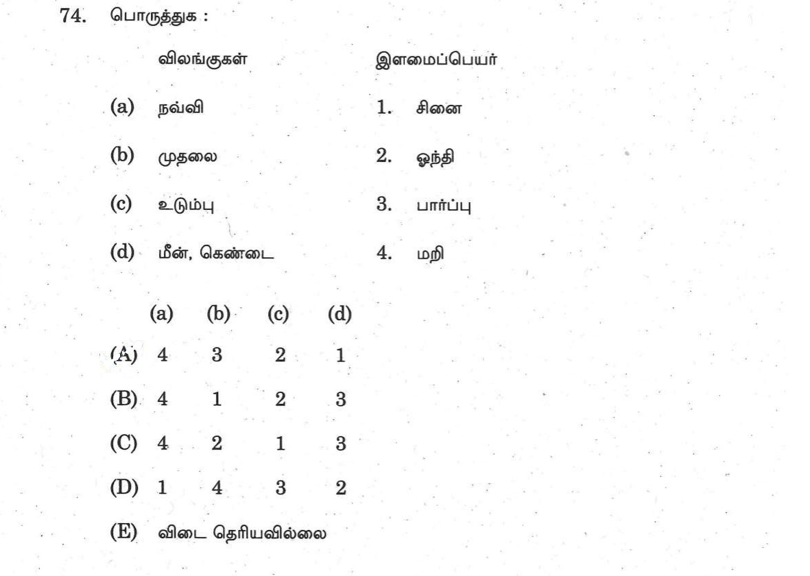
வினாத்தாள் படம் · தொட்டுப் பெரிதாக்கலாம்
பொருத்துக : விலங்குகள் - இளமைப்பெயர் :
a) நவ்வி
b) முதலை
c) உடும்பு
d) மீன், கெண்டை
பட்டியல் II
1. சினை
2. ஓந்தி
3. பார்ப்பு
4. மறி
- A4, 3, 2, 1
- B4, 1, 2, 3
- C4, 2, 1, 3
- D1, 4, 3, 2
விடையும் விளக்கமும்
TNPSC இறுதி விடைநான்கு விடைகளும் ஏற்கப்பட்டன (ALL)
TNPSC இறுதி விடைக்குறிப்பில் வினா 74
விளக்கம்
இந்த வினாவுக்கு TNPSC இறுதி விடைக்குறிப்பு நான்கு விடைகளையும் ஏற்றுக்கொள்கிறது. நான்கையும் ஏற்றதற்கான காரணத்தை TNPSC தெரிவிக்கவில்லை. அச்சான பட்டியல் II-இல் குறை இருப்பது ஒரு காரணமாக இருக்கலாம்: தொல்காப்பியத்தில் பார்ப்பு என்பது தவழ்வனவற்றுக்குப் பொதுவான இளமைப்பெயர்; எனவே முதலை, உடும்பு இரண்டுக்கும் பொருந்தும். ஓந்தி என்பது ஓணான் என்ற உயிரியின் பெயர்; இளமைப்பெயர் அல்ல. நினைவில் கொள்க: நவ்வி (மான்) - மறி.
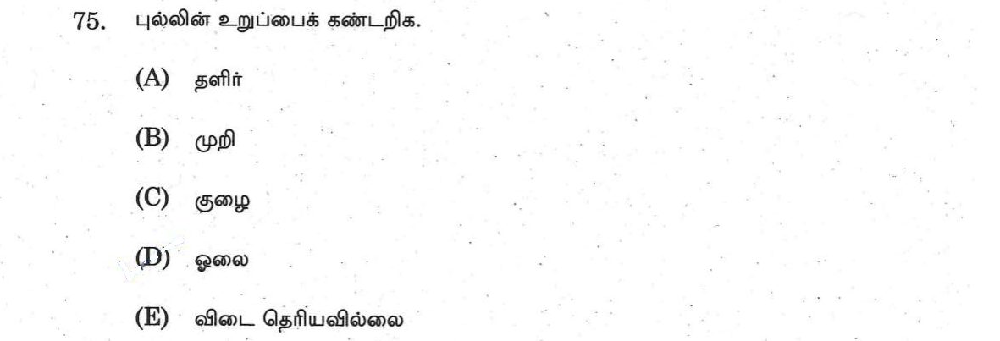
வினாத்தாள் படம் · தொட்டுப் பெரிதாக்கலாம்
புல்லின் உறுப்பைக் கண்டறிக.
- Aதளிர்
- Bமுறி
- Cகுழை
- Dஓலை
விடையும் விளக்கமும்
TNPSC இறுதி விடைக்குறிப்பில் வினா 75
விளக்கம்
சரியான விடை (D): ஓலை. தொல்காப்பியம் (மரபியல்) புறத்தே வயிரம் உடைய பனை, தென்னை போன்றவற்றைப் 'புல்' என்று வகைப்படுத்தி, அவற்றின் இலையை 'ஓலை' என்று கூறுகிறது (தென்னை ஓலை, பனை ஓலை). தளிர், முறி, குழை ஆகியவை மரங்களின் இலைநிலைப் பெயர்கள்.